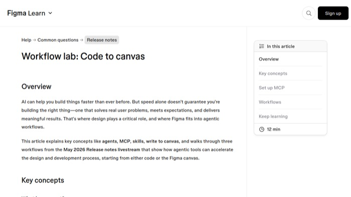
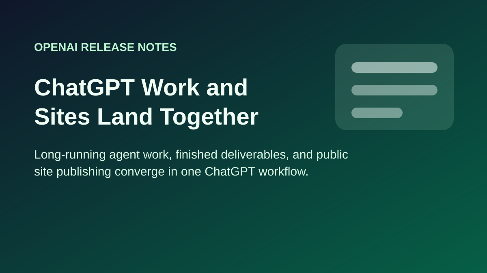
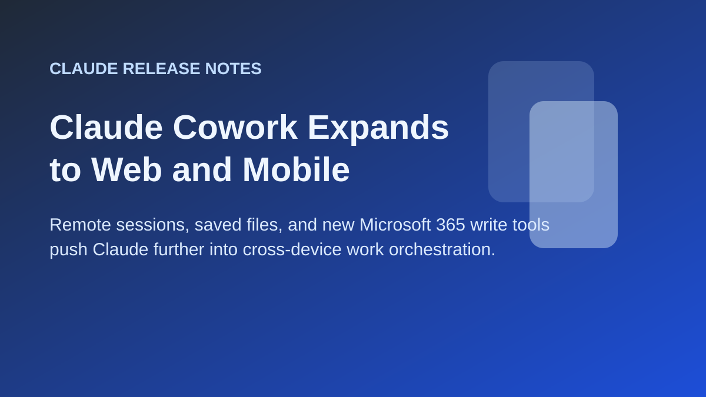
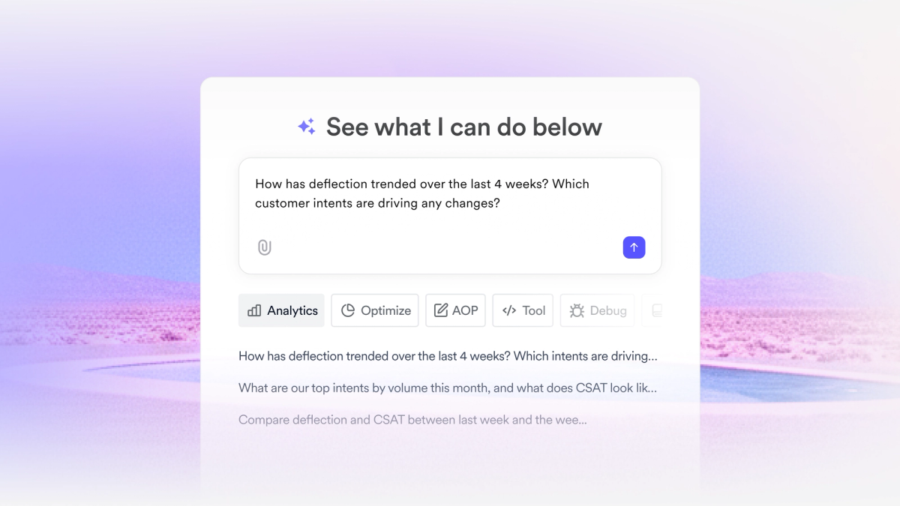
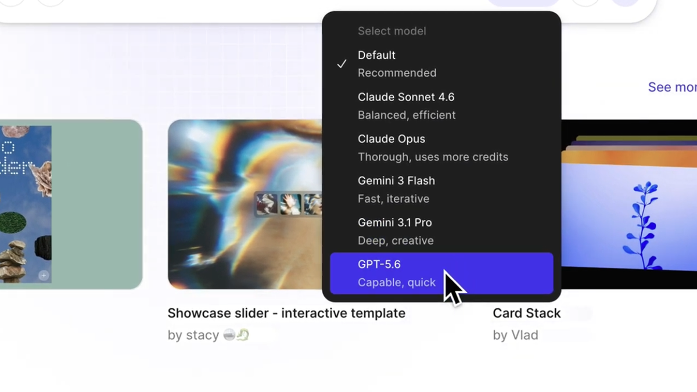
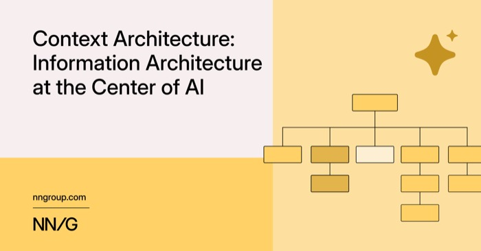
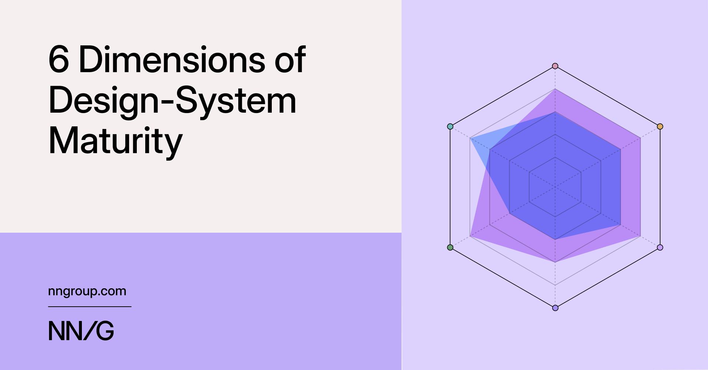
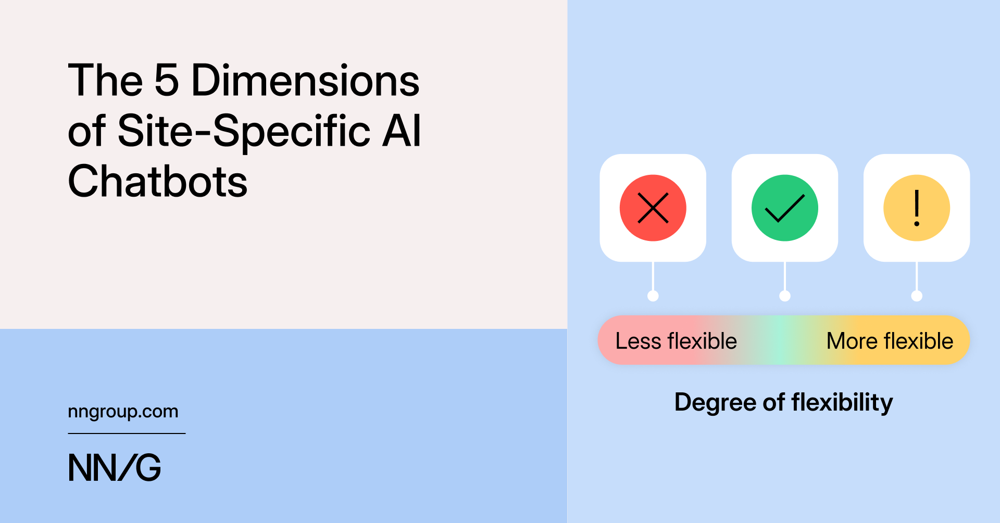
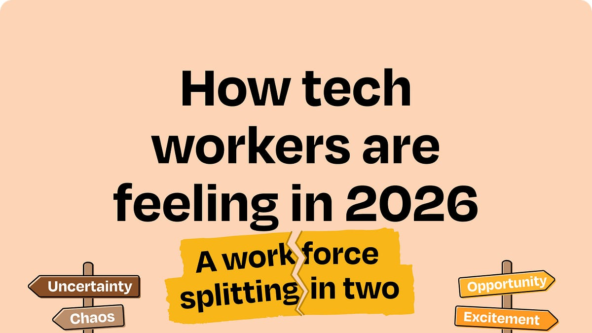

Week 29 - July 13 to 19, 2026
What colleagues are talking about this week?
Internal Updates
All 6
Tools & Releases
Learning & Curriculum
Best Practices
Others
#genai_eng
#agent-fabric
#ai-for-ux
#design
#design
#genai_eng
Skills MCP Server Makes Booking Skills Discoverable Inside AI Coding Tools
What is the update: the community-launched Skills MCP Server lets Claude Code, Codex, and Cursor search the Booking Skills Catalog semantically and load only the skills needed for the current task.
Why it's valuable for UXers: design technologists and prototypers can discover reusable internal workflows in context without loading or remembering the entire catalogue.
Agent Fabric Becomes One Home for Agents, MCP Servers, Skills, and Profiles
What is the update: Agent Fabric launched a single internal destination for discovering, building, and running agents alongside MCP servers, skills, and reusable profiles.
Why it's valuable for UXers: it reduces fragmented entry points and makes AI-enabled design and prototyping workflows easier to find, share, and hand over.
AI for UX Session 4 Shares Claude Commands Recording and Handout
What is the update: the AI for UX community published the Session 4 material on Claude Commands, including the recording and a reusable handout after the live workshop.
Why it's valuable for UXers: teams can turn repeated research, critique, and prototype tasks into shared commands without relying on live attendance.
Booking Design+AI Summit Opens a Hands-On Community Showcase
What is the update: the Design+AI Summit moved to September 2 and invited designers to share AI-assisted processes, cases, tools, and workflows alongside talks and workshops.
Why it's valuable for UXers: it creates a practical venue for comparing what works across teams and turning individual experiments into reusable community knowledge.
Production-Ready AI Illustration Tool Recruits Community Testers
What is the update: a near-release internal tool for generating production-ready illustrations with AI opened a round of 30-minute community user-testing sessions.
Why it's valuable for UXers: designers can influence the workflow before launch and evaluate whether generated visuals meet real production and brand-quality needs.
GPT-5.6 Guide Maps Practical Model and Agent Workflow Choices
What is the update: a practical internal guide explains the Sol, Terra, and Luna variants, reasoning effort, token usage, subagents, AGENTS.md, and verification patterns.
Why it's valuable for UXers: UX technologists can make more deliberate model, cost, and quality choices when building or evaluating AI-assisted prototypes.
External Updates
Top picks and industry news

Top pick · 1Figma · July 16
Code-Backed Screens Arrive on the Canvas with Variables Attached
What is the update: screens brought into Figma from Make previews, Figma MCP, or the Chrome extension can now bind to existing variables and arrive with more auto layout.
Why it’s valuable for UXers: live interfaces can return to the canvas with more of their design-system meaning intact, reducing manual rebuilding during design-to-code handoff.
Top pick · 2
Bolt · July 16
Bolt Slides Turns Presentations into Interactive Experiences
What is the update: Bolt launched an open-source agent for creating interactive decks with live data, working prototypes, 3D elements, and support for Claude Code, Codex, and Cursor.
Why it’s valuable for UXers: presentations can become testable communication surfaces instead of static exports, tightening the loop between storytelling and prototyping.

Top pick · 3OpenAI · July 16
ChatGPT Desktop Unifies Chat, Work, Codex, and Recents
What is the update: the desktop app introduced clearer switching between Chat, Work, and Codex, a unified recents view, Projects, and cross-device continuation for Work tasks.
Why it’s valuable for UXers: longer research and design tasks can retain context while moving between modes and devices, with fewer fragmented entry points.

Anthropic · July 14
Claude for Teachers Builds Around a Specific Professional Workflow
What is the update: Anthropic introduced a teacher-focused Claude experience with education skills, curriculum connectors, privacy controls, and evaluation partnerships.
Why it’s valuable for UXers: it is a useful example of shaping an AI product around domain language, trusted data, concrete tasks, and role-specific guardrails.

Figma · July 14
Admins Can Export AI Credit Usage During Betas
What is the update: Figma admins can now download CSV reports showing how beta AI-feature credits are being used across their organisation.
Why it’s valuable for UXers: design leaders gain a clearer signal of adoption and cost before deciding which AI workflows deserve broader rollout or enablement.

OpenAI · July 15
Custom Instructions Expand to 5,000 Characters
What is the update: ChatGPT raised the custom-instruction limit from 1,500 to 5,000 characters for paid, business, enterprise, and education plans.
Why it’s valuable for UXers: teams can preserve richer role, audience, quality, and workflow context without repeating a long setup in every design or research conversation.

OpenAI · July 14
ChatGPT Adds Unified Search Across Chats, Projects, Images, and Files
What is the update: a new unified search can retrieve conversations, project content, generated images, and uploaded documents with filters from one place.
Why it’s valuable for UXers: research evidence and prior explorations become easier to recover, reducing repeated work across long-running projects.
What colleagues are talking about this week?
MCP
Internal Updates
All 7Tools & ReleasesLearning & CurriculumBest PracticesOthers
#design
#genai_eng
#ai-curriculum
#ai-for-ux
#ai-studio
#design
#ai-curriculum
Claude Assistant Adds Dieter Actions, Scheduling, and a Budget Ring
What is the update: a new Claude Assistant release shipped Dieter actions, scheduled prompts, notes, model switching, and budget tracking.
Why it's valuable for UXers: it brings repeatable design workflows and cost visibility into one internal tool.
Sourcegraph Official Lands in Toolbox with OAuth and No PAT
What is the update: Sourcegraph Official arrived in Toolbox with OAuth and richer repository search.
Why it's valuable for UXers: codebase inspection becomes easier for design-system and design-to-code work.
Design with AI Session 8 Videos and Transcripts Go Live
What is the update: Session 8 was published with recordings and transcripts.
Why it's valuable for UXers: teams get a reusable learning artifact without depending on live attendance.
AI for UX Session 3 Recording Explains Model and Agent Landscape
What is the update: Session 3 covered model types, multimodal capabilities, thinking models, and agents.
Why it's valuable for UXers: it gives teams shared language for choosing tools.
AI Studio Makes PII Guardrails Actionable Row by Row
What is the update: AI Studio now identifies rows and PII classes that trigger batch guardrails.
Why it's valuable for UXers: safety feedback becomes specific enough to act on.
Figma Make Prompting Cheatsheet Captures Unrecorded Config Tips
What is the update: a Config recap shared reusable base-prompt and edit-prompt frameworks.
Why it's valuable for UXers: designers gain a practical structure for steering AI prototypes.
Design with AI Session 8 Covers PM Insights and Second-Brain Workflows
What is the update: Session 8 explored product perspectives and personal second-brain systems.
Why it's valuable for UXers: teams can organise AI-generated insights alongside manual notes.
External Updates
Top picks and industry news
Top pick · 1
Figma Blog
How Decagon Uses AI for Design System Saturation
What is the update: Decagon used Figma MCP and Figma Make to scale a new design system.
Why it’s valuable for UXers: it connects AI prototyping to a living design system.

Top pick · 2Nielsen Norman Group
Design-System Maturity: A 6-Dimension Framework
What is the update: NN/g published a six-dimension maturity model.
Why it’s valuable for UXers: teams can judge where AI acceleration meets system maturity.

Top pick · 3Nielsen Norman Group
The 5 Qualities of Site-Specific AI Chatbots
What is the update: NN/g outlined five traits for trustworthy site-specific chatbots.
Why it’s valuable for UXers: trust goals become concrete evaluation criteria.
Bolt
Build Your Own Custom Software with AI
What is the update: Bolt shared a guide to tailored internal software.
Why it’s valuable for UXers: it supports designer-built utilities and prototypes.

Lenny's Newsletter
How Tech Workers Are Feeling in 2026
What is the update: a survey found diverging sentiment around AI.
Why it’s valuable for UXers: leaders gain a people-and-culture signal for adoption.
Anthropic
Claude Cowork Expands to Web and Mobile
What is the update: Cowork expanded across devices and Microsoft 365.
Why it’s valuable for UXers: long-running tasks become easier to hand off.
OpenAI
ChatGPT Work and Public Sites Publishing
What is the update: OpenAI connected longer tasks, desktop modes, and public site publishing.
Why it’s valuable for UXers: one workflow can move from research to a shareable output.
Figma Blog
GPT-5.6 Is Now Available in Figma Make
What is the update: Figma added GPT-5.6 to Make.
Why it’s valuable for UXers: stronger first passes can shorten prototype iteration.
All Weeks
Browse the full archive
2026
Booking.com UX AI Knowledge Hub
Curated internal AI resources for UX designers